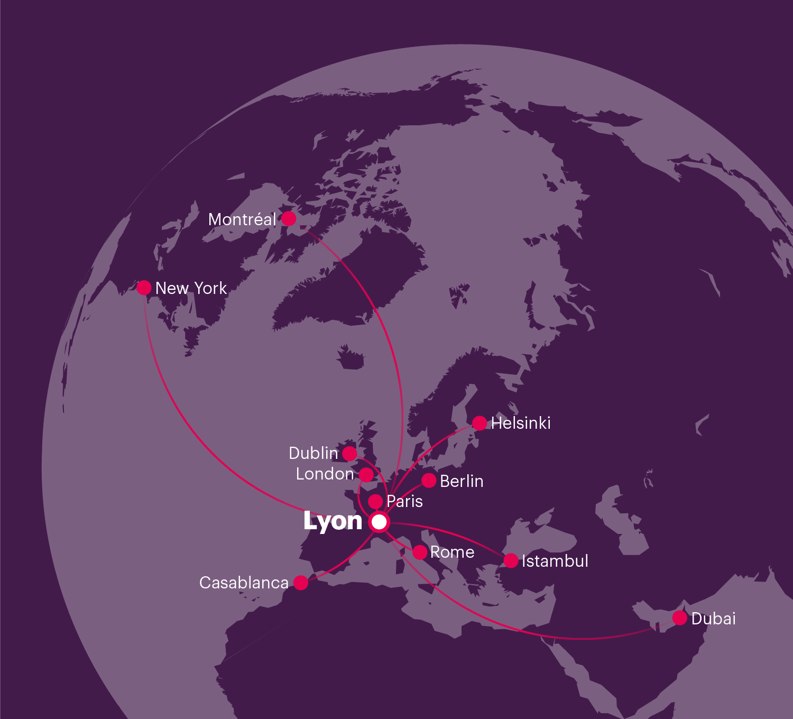

Lyon benefits from a central location in Europe. You can enjoy a quiet high-speed train, or take a direct flight from 125 cities in 46 countries. Paris is just two hours away. Bon voyage!
You’ll arrive at Lyon Saint-Exupéry (LYS), the main airport. From there, there’s a 30 minutes Rhône Express that will take you to Gare de Lyon-Part-Dieu.
Lyon is also connected directly to Paris-Charles de Gaulle (CDG) and Geneva Airport (GVA) via a 2 hours direct train ride.
You can reach Lyon from many European cities. It takes about two hours from Paris or Geneva, five hours from London, Barcelona or Milan.
The Part-Dieu and Perrache stations are both well connected to the metro network.
The centrality of Lyon in Europe makes easy to reach it by car, and sharing with others might make an enjoyable road trip too.
For convenient carpooling you can check Bla Bla Car.
If you are a citizen on the list of countries that are exempt for stays up to 90 days, excellent! Otherwise you might need a VISA. Make sure you check before travelling.